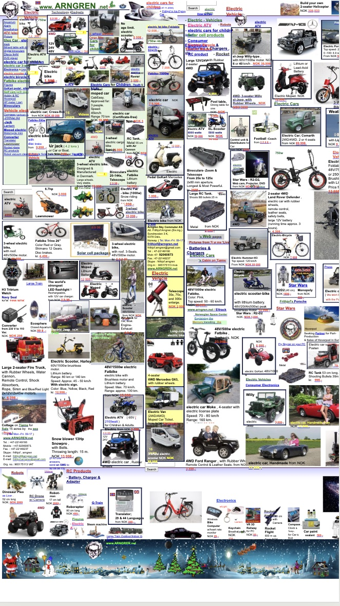
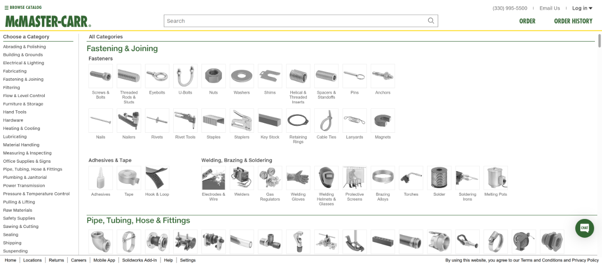

Lab 3.2 Critique
Example of a bad website Bad Website
Consitency: The website completely lacks consistency. Firstly, there's no consistent colour scheme and no clear navigation section. There isnt even a distinct head it appears as just a splash of images and text which aren't alligned nicely. The text is often overlapping and has many random font colours, overall the website just looks overwhelming.
Ease of Navigation: There are no links to the homepage or a clear easily usable navigation tab. Some links are even overlapping and appear under each other meaning they cannot be accessed.
Universal Usability: The website is not responsive in terms of when the window is shrunk. Additionally, the display does not have any major changes made for mobile users and other devices, instead it appears to be compressed and even more cluttered than usual. For mobile formats the text is essentially unreadable and even more overlap and format issues occur.
Error Prevention: The website has not been debugged of any possible errors as in the developer tools it shwos that there are several erros including some "failed to load resource" errors.
 Example of a good website Good Website
Consistency: McMaster-Carr's website is a great example of good web design. The pages are consistent, with a clean and uniform look across the site. It's main design focus is on speed and simplicity. It has fixed dimensions that keep everything looking neat and easy to navigate. One area of improvement could be on it's visual design. Some may argue that the site isn't the most visually exciting. It's functional, but it's not flashy.
Ease of Navigation: The homepage has everything required. There's a search bar at the top of the page where you can look up parts or even specific part numbers. Important details like shipping info are located in the footer so that they can be found easily, but not clutter the page. The rest of the content is organized cleanly, so browsing for parts is easy. Links are simple to click on any device, and the site is incredibly fast and responsive.
Universal Navigation: The same information is available on mobile or desktop, but formatted differently to fit the device. On mobile, it's laid out vertically for easy scrolling. Overall, McMaster-Carr has a good responsive design. The layout adjusts smoothly when you resize the window, so it always looks good regardless of screen size. It's a simple, functional, and efficient website.
Error Prevention: There is minimal errors present when checking the developer tools. None of the erros significantly affect the appearance or performance of the website.